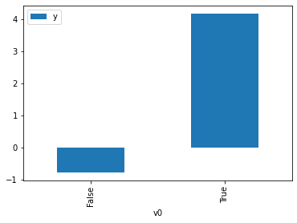
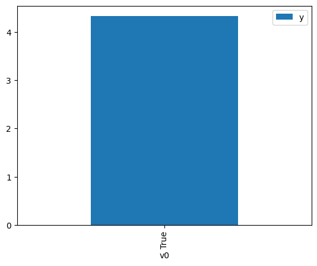

Demo for the DoWhy causal API
We show a simple example of adding a causal extension to any dataframe.
[1]:
import dowhy.datasets
import dowhy.api
import numpy as np
import pandas as pd
from statsmodels.api import OLS
[2]:
data = dowhy.datasets.linear_dataset(beta=5,
num_common_causes=1,
num_instruments = 0,
num_samples=1000,
treatment_is_binary=True)
df = data['df']
df['y'] = df['y'] + np.random.normal(size=len(df)) # Adding noise to data. Without noise, the variance in Y|X, Z is zero, and mcmc fails.
#data['dot_graph'] = 'digraph { v ->y;X0-> v;X0-> y;}'
treatment= data["treatment_name"][0]
outcome = data["outcome_name"][0]
common_cause = data["common_causes_names"][0]
df
[2]:
| W0 | v0 | y | |
|---|---|---|---|
| 0 | 0.326689 | False | 0.448556 |
| 1 | -0.906599 | True | 2.325172 |
| 2 | 0.378685 | False | -1.157150 |
| 3 | -0.299435 | False | 0.630886 |
| 4 | 1.042586 | True | 2.949594 |
| ... | ... | ... | ... |
| 995 | 0.770774 | True | 5.430327 |
| 996 | -0.586816 | True | 5.585402 |
| 997 | 0.722458 | False | 1.299977 |
| 998 | -0.395364 | True | 4.492349 |
| 999 | -0.586639 | True | 2.965871 |
1000 rows × 3 columns
[3]:
# data['df'] is just a regular pandas.DataFrame
df.causal.do(x=treatment,
variable_types={treatment: 'b', outcome: 'c', common_cause: 'c'},
outcome=outcome,
common_causes=[common_cause],
proceed_when_unidentifiable=True).groupby(treatment).mean().plot(y=outcome, kind='bar')
[3]:
<AxesSubplot:xlabel='v0'>

[4]:
df.causal.do(x={treatment: 1},
variable_types={treatment:'b', outcome: 'c', common_cause: 'c'},
outcome=outcome,
method='weighting',
common_causes=[common_cause],
proceed_when_unidentifiable=True).groupby(treatment).mean().plot(y=outcome, kind='bar')
[4]:
<AxesSubplot:xlabel='v0'>

[5]:
cdf_1 = df.causal.do(x={treatment: 1},
variable_types={treatment: 'b', outcome: 'c', common_cause: 'c'},
outcome=outcome,
dot_graph=data['dot_graph'],
proceed_when_unidentifiable=True)
cdf_0 = df.causal.do(x={treatment: 0},
variable_types={treatment: 'b', outcome: 'c', common_cause: 'c'},
outcome=outcome,
dot_graph=data['dot_graph'],
proceed_when_unidentifiable=True)
[6]:
cdf_0
[6]:
| W0 | v0 | y | propensity_score | weight | |
|---|---|---|---|---|---|
| 0 | -0.114414 | False | 0.806617 | 0.521814 | 1.916392 |
| 1 | -0.437425 | False | -1.844901 | 0.527280 | 1.896524 |
| 2 | 0.908197 | False | 1.566832 | 0.504479 | 1.982241 |
| 3 | 0.180203 | False | -1.473251 | 0.516823 | 1.934897 |
| 4 | -0.919758 | False | -1.201705 | 0.535431 | 1.867655 |
| ... | ... | ... | ... | ... | ... |
| 995 | -0.924271 | False | -0.188714 | 0.535507 | 1.867390 |
| 996 | 1.820202 | False | 1.088118 | 0.489009 | 2.044950 |
| 997 | 0.039937 | False | -1.274895 | 0.519200 | 1.926041 |
| 998 | 0.035028 | False | 0.371365 | 0.519283 | 1.925732 |
| 999 | -1.157552 | False | 0.901272 | 0.539442 | 1.853767 |
1000 rows × 5 columns
[7]:
cdf_1
[7]:
| W0 | v0 | y | propensity_score | weight | |
|---|---|---|---|---|---|
| 0 | 2.356333 | True | 6.847476 | 0.520077 | 1.922793 |
| 1 | 1.841864 | True | 6.748936 | 0.511358 | 1.955578 |
| 2 | -0.758494 | True | 4.397192 | 0.467292 | 2.139988 |
| 3 | -0.741826 | True | 5.669855 | 0.467574 | 2.138699 |
| 4 | -2.428560 | True | 2.266709 | 0.439216 | 2.276786 |
| ... | ... | ... | ... | ... | ... |
| 995 | -1.083720 | True | 5.126413 | 0.461803 | 2.165426 |
| 996 | -0.411489 | True | 3.131912 | 0.473158 | 2.113458 |
| 997 | -2.217379 | True | 2.438822 | 0.442748 | 2.258620 |
| 998 | -1.247205 | True | 4.836007 | 0.459047 | 2.178427 |
| 999 | -0.586639 | True | 2.965871 | 0.470196 | 2.126771 |
1000 rows × 5 columns
Comparing the estimate to Linear Regression
First, estimating the effect using the causal data frame, and the 95% confidence interval.
[8]:
(cdf_1['y'] - cdf_0['y']).mean()
[8]:
$\displaystyle 5.08778423567129$
[9]:
1.96*(cdf_1['y'] - cdf_0['y']).std() / np.sqrt(len(df))
[9]:
$\displaystyle 0.102090330103608$
Comparing to the estimate from OLS.
[10]:
model = OLS(np.asarray(df[outcome]), np.asarray(df[[common_cause, treatment]], dtype=np.float64))
result = model.fit()
result.summary()
[10]:
| Dep. Variable: | y | R-squared (uncentered): | 0.934 |
|---|---|---|---|
| Model: | OLS | Adj. R-squared (uncentered): | 0.934 |
| Method: | Least Squares | F-statistic: | 7076. |
| Date: | Wed, 14 Sep 2022 | Prob (F-statistic): | 0.00 |
| Time: | 18:55:14 | Log-Likelihood: | -1395.1 |
| No. Observations: | 1000 | AIC: | 2794. |
| Df Residuals: | 998 | BIC: | 2804. |
| Df Model: | 2 | ||
| Covariance Type: | nonrobust |
| coef | std err | t | P>|t| | [0.025 | 0.975] | |
|---|---|---|---|---|---|---|
| x1 | 0.7558 | 0.031 | 24.243 | 0.000 | 0.695 | 0.817 |
| x2 | 5.0264 | 0.045 | 111.891 | 0.000 | 4.938 | 5.115 |
| Omnibus: | 0.256 | Durbin-Watson: | 2.046 |
|---|---|---|---|
| Prob(Omnibus): | 0.880 | Jarque-Bera (JB): | 0.322 |
| Skew: | 0.031 | Prob(JB): | 0.851 |
| Kurtosis: | 2.938 | Cond. No. | 1.48 |
Notes:
[1] R² is computed without centering (uncentered) since the model does not contain a constant.
[2] Standard Errors assume that the covariance matrix of the errors is correctly specified.